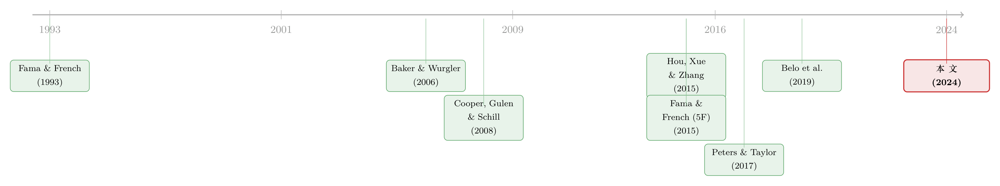

因子模型的成败，藏在一个变量的「构造方式」里
本文读的是 Cooper, Gulen & Ion (2024, JFE)：Hou-Xue-Zhang (2015) 的 q-因子模型和 Fama-French (2015) 的五因子模型之所以「能打」，关键并不在于它们的理论动机，而在于它们都偷偷把「投资因子」构造成了 资产增长 (asset growth, AG)。一旦换成教科书意义上的「投资」——资本开支、PPE 增长，乃至把无形资本也算进去——这两个新模型的定价能力就显著塌方。而 AG 真正的力量，来自存货和应收账款，它们捕捉的更像是 总体股权融资成本的冲击，而非「投资」。
1 一个让人不安的巧合
先讲一个让做实证资产定价的人都熟悉的故事。
过去十年，资产定价的「军备竞赛」打得火热。Fama 和 French 在 1993 年的三因子模型 (three-factor model) 称霸了二十年，加上 Carhart (1997) 的动量，构成了大半个领域的基准 (benchmark)。但到了 2015 年，两支新军几乎同时杀入：一支是 Hou, Xue and Zhang (2015)（下称 HXZ）的四因子 q-因子模型，另一支是 Fama and French (2015)（下称 FF5F）的五因子模型。它们的共同卖点，是在原有因子之外，加入了两个与公司基本面挂钩的新因子——盈利能力 (profitability) 和 投资 (investment)。
这两个新因子不是凭空来的。FF5F 用的是 股利贴现模型 (dividend discount model) 的逻辑，HXZ 用的是 Cochrane (1991) 一脉的 q-理论 (q-theory) 生产模型。理论告诉我们：在其他条件不变时，投资得越多的公司，预期收益越低。这是一个干净、优雅、有微观基础的故事。两个模型一问世就被疯狂引用——截至作者写作时，FF5F 有 7722 次引用，HXZ 有 2347 次。
但 Cooper、Gulen 和 Ion 三位作者注意到了一个细节，一个看上去无伤大雅、实则要命的细节。
这两个模型在嘴上说的是「投资」，理论推导里站着的是资本、是固定资产、是 q-理论里那个最优投资率。可一旦你翻开它们的实证附录，去看那个「投资因子」到底是用什么变量排序构造出来的，你会发现——它们用的根本不是「投资」。
它们用的是 资产增长 (asset growth, AG)，即账面总资产的年度百分比变化：
$$\text{AG}_{t} = \frac{\text{TA}_{t} - \text{TA}_{t-1}}{\text{TA}_{t-1}}$$
这个变量来自 Cooper, Gulen and Schill (2008) 那篇著名的「资产增长异象」论文——总资产长得越快的公司，未来收益越低。它确实和收益负相关，确实「好用」。但它是一个 会计层面的、把资产负债表两边一锅烩 的量，跟 q-理论里那个「投资」相去甚远。
于是，一个自然的问题浮出水面：这两个模型的成功，到底是理论的胜利，还是这个特定变量的胜利？
2 把「投资」换回它本来的样子
要回答这个问题，作者的做法朴素而致命：保持模型结构不变，只把投资因子里的排序变量从 AG 换成真正的投资度量，然后看模型还灵不灵。
他们准备了几把「正经」的投资尺子：
- CAPX：资本开支除以滞后 PPE，现金流量表里最标准的投资口径；
- PPE 增长：厂房、设备、不动产的百分比变化，固定资产的直接增长；
- 以及更「与时俱进」的三把——TOTK / PHK / INTK，来自 Peters and Taylor (2017)。后者的洞见是：三十年前新古典投资理论成形时，公司主要拥有的是有形资本；可如今 无形资本 (intangible capital)——研发资本、组织资本——已是越来越重要的生产要素，理应被算进「投资」。他们把表外无形资本估算为「资本化的研发 + 30% 的 SG&A」，再加上表内的商誉与有形的 gross PPE，得到公司的总资本。
接着是关键一步：用 Barillas and Shanken (2017) 与 Barillas et al. (2020) 的框架做 最大夏普比率检验 (maximum Sharpe ratio test)。这个框架有个漂亮的性质——比较两个（可交易因子构成的）模型 \(f_1\) 与 \(f_2\) 的定价能力，等价于 比较它们各自能达到的最大平方夏普比率：
$$\text{maxSR}^2(f_2) - \text{maxSR}^2(f_1)$$
直觉是这样的：一个模型 \(f_1\) 对资产 \(X\) 的「定价失败程度」，等于把 \(X\) 和另一组因子 \(f_2\) 加进投资组合后，夏普比率还能被抬高多少——即 \(\text{maxSR}^2(f_1, f_2, X) - \text{maxSR}^2(f_1)\)。两个模型一减，测试资产 \(X\) 整项消掉，最后只剩下 \(\text{maxSR}^2(f_2) - \text{maxSR}^2(f_1)\)。这意味着：要比较两个模型谁更好，你甚至不需要指定测试资产——这正是该框架的精妙处（关于因子模型比较的更多门道，可参见《没有唯一的冠军：当「交易冲击」把因子模型的擂台，按体量分成了三个》）。
结果令人警醒。在 HXZ 的结构下（论文表 1 的 Panel A），把 AG 因子换成五种替代投资度量中的任何一种，模型相对原版 AG-HXZ 的 \(\Delta(\text{maxSR}^2)\) 全是负的、且显著：CAPX 是 -0.038**、PPE 增长 -0.044**、TOTK -0.040**、PHK -0.055***、INTK -0.055**。作为对照，原版 AG-HXZ 相对「完全不含投资因子」的提升是 -0.078***——也就是说，AG 这个因子贡献了一大块定价能力，而换成任何「正经投资」都会丢掉其中相当一部分。
FF5F 这边（Panel B）更尴尬。换成五种替代度量后，模型同样显著跑输原版 FF5F（\(\Delta(\text{maxSR}^2)\) 在 -0.033** 到 -0.039** 之间）；而且第二、三行的估计告诉我们：这些「正经投资」构造出来的因子，可以被市场、规模、账面市值比和盈利因子张成 (spanned)，甚至被 FF3F 三因子张成——换句话说，一旦用传统投资度量，投资因子在 FF5F 里就是 冗余的 (redundant)。
作者还嫌不够狠。他们做了一个「模型挖掘 (model-mining)」练习：用存货、PPE、商誉、研发、SG&A 等各类资产投资排列组合，造出 144 种 不同的投资因子，逐一塞进 HXZ / FF5F。结论是——几乎全部跑输 AG 版本。
到这里，第一个核心结论已经立住了：HXZ 和 FF5F 的「超能力」，不是来自它们标榜的理论投资变量，而是来自 AG 这个非常规的实证构造。当你用理论真正指向的投资度量时，这两个被寄予厚望、号称要取代旧模型的新军，并不比 Fama-French (1993) 或 Carhart (1997) 更强。
3 那么，AG 到底捕捉了什么？
故事到这儿本可以收尾——「皇帝的新衣」被戳穿了。但真正精彩的部分才刚开始。因为一个尖锐的反问立刻就来了：
如果 AG 不是「投资」，可它偏偏定价能力又这么强，那它到底在捕捉什么？
作者的策略是「解剖」。他们把总资产增长拆成资产负债表两侧的各个子项：左侧是现金、存货、应收账款、PPE、无形资产、其他资产的变化；右侧是流动经营负债、非流动经营负债、长期债务、普通股、留存收益的变化。这样得到 11 个子成分，每个都拿去替换 AG 因子，看模型表现怎么变。
两个跨 HXZ / FF5F 一致的发现：
第一，越「像投资」的子成分，越不行。 用 PPE 增长或表内无形资产增长构造的因子，显著跑输原版 AG 模型。
第二，真正扛起 AG 大旗的，是两个你想不到的科目——存货增长 (INVT) 和应收账款增长 (AREC)。 用它们替换 AG，模型表现与原版 没有显著差异。进一步的张成回归 (spanning regression) 显示：INVT 和 AREC 两者合在一起，包含了 AG 因子贡献给模型的绝大部分定价信息；而且 AG、INVT、AREC 三者都无法被其他任何子成分张成。
这是一个相当反直觉的反转。q-理论让我们盯着厂房和设备，结果定价信息却藏在 存货 和 应收账款 里——这两样东西，与其说是「公司在投资」，不如说常常是公司经营状态的征兆：存货堆积，可能是产品卖不动；应收账款上升，可能是赊出去的货收不回款。它们和「最优投资」几乎是两回事。
4 真正关键的一步：AG 捕捉的是「股权融资成本」
既然 AG、INVT、AREC 的定价能力不是「投资」，那它们一定捕捉了某种 总体层面的共同波动 (aggregate comovement)。是什么？
作者搬出一整套宏观因子做 GMM 检验——TFP 冲击、投资专用技术、流动性因子 (Pastor-Stambaugh)、宏观不确定性 (Jurado et al.)、中介杠杆 (Adrian et al.)、中介资本比 (He et al.)、股权融资冲击 (Belo et al.)、以及股市情绪 (Baker-Wurgler) 等等——看哪些能给 AG、INVT、AREC、PPE 排序组合定价。
核心发现一锤定音：融资相关的冲击（投资者情绪、股权发行成本、金融中介资产负债表）能给 AG、INVT、AREC 组合定价，却管不了 PPE 组合。而其中唯一一个能同时显著定价 AG、INVT、AREC 三组、却对 PPE 无效的，是 Baker and Wurgler (2006) 的 股市情绪因子 (BW)。更惊人的是，一旦把 BW 加进随机贴现因子 (SDF)，给 AG/INVT/AREC 定价时，其他几乎所有宏观因子都变得不显著了；可给 PPE 定价时却不是这样——TFP、CAY、流动性、投资专用技术冲击仍然显著。
为什么是融资成本？作者借用了 Belo et al. (2019) 的 债务-股权替代 (debt-equity substitution) 机制：投资多的公司受抵押约束更小，更能在坏年景里用股权替代债务来对冲股权融资冲击。作者把这个逻辑推广了一步——短期资产比长期资产更易作抵押（Berger et al., 1996），所以按存货和应收账款排序，可能比按 PPE 排序更准确地分出「谁被抵押约束卡着」。证据是：在投资者情绪 (BW) 大幅下挫的时期，高 AG / INVT / AREC 的公司确实更能用股权替代债务，而高低 PPE 增长的公司之间这种替代性就弱得多。
那这个「融资成本」是风险还是错误定价？作者很诚实地说：没有结构模型，难下定论。但他们用 Cassella and Gulen (2018) 的 总体过度外推 (overextrapolation, DOX) 代理变量做了一个漂亮的切割：HXZ / FF5F 相对传统投资版本的超额表现，只出现在高过度外推的时期。在过度外推低于中位数的子样本里，HXZ 不显著优于 Carhart (1997)，FF5F 也不显著优于 FF3F 或 Carhart——这把矛头隐隐指向了 行为偏差 一侧。
作者反复强调一个更上位的判断：HXZ 和 FF5F 是 简约形式 (reduced-form) 模型，它们把预期收益和一组「不可观测」的特征（预期投资、预期盈利、预期账面股权增长）挂钩，而这些量在数据里 没有清晰对应物。当你用大量自由度去「把理论拿到数据里」，实现选择 (implementation choice) 不同就能造出天差地别的表现，那这些模型还配得上「被理论约束 (disciplined by theory)」这句话吗？如果配不上（本文的证据如此暗示），那它们相对 Kozak et al. (2019)、Kelly et al. (2019) 这类纯统计动机的模型，就没什么先验的优越性可言了。
5 文献脉络
把这条线索捋一捋，会看到一段很典型的「实证资产定价螺旋」。
最早是 Fama and French (1993) 立下三因子，Carhart (1997) 补上动量，这是整整一代人的基准。与此同时，公司层面的 异象 (anomalies) 越攒越多，其中 Cooper, Gulen and Schill (2008) 发现的资产增长异象格外稳健——总资产增长越快，未来收益越低。
接着，理论一侧的 q-理论（Cochrane, 1991 一脉）给「投资负向预测收益」提供了微观基础。于是 2015 年，HXZ 和 FF5F 几乎同时把「投资」请进因子模型，用理论给异象「正名」。可问题在于，他们实证里用来代理「投资」的，正是 Cooper-Gulen-Schill 那个会计味十足的 AG。

与此并行，另一条线在反思「投资该怎么量」：Peters and Taylor (2017) 主张把无形资本算进来；Belo et al. (2019) 则把投资与股权融资成本联系起来。再加上 Baker and Wurgler (2006) 的情绪因子、Cassella and Gulen (2018) 的过度外推度量——本文恰好站在这几条线的交汇点：它用「换变量」的手术刀解剖了 2015 年那两个明星模型，发现它们的成功被错误地归功于「投资理论」，而真正的功臣是潜伏在 AG 里的「融资成本/情绪」维度。这也呼应了近年来对「因子动物园」的整体反思（可参见《弱替代：因子动物园是从哪里冒出来的？》与《压缩横截面：因子动物园的尽头，不是更少的因子，而是更聪明的收缩》）。
6 评论与延伸（Q&A + 研究方向）
(a) 几个可能的疑问
Q：这篇文章是在说 HXZ 和 FF5F「错了」吗？
不是。作者讲得很克制：这两个模型在描述股票横截面收益上 确实表现很好，AG 因子也确实捕捉了一种真实的共同波动。文章质疑的不是它们的实证表现，而是它们的 理论标签——把一个本质上与融资成本/情绪有关的因子，包装成 q-理论意义上的「投资」，是一种「错配 (misplaced)」。
Q：为什么换成「更全面」的无形资本度量（INTK）反而最差？
这恰恰是全文最有力的反证之一。如果 HXZ / FF5F 的故事真的是「投资」，那把表外无形资本也算进来、得到一个更完整的投资度量，理应让模型 更好。可结果 INTK 版本反而显著最差（HXZ 下
-0.055**）。这说明模型的定价能力根本不在「投资」这个维度上——你把投资量得越准，离 AG 真正捕捉的东西就越远。
Q：INVT 和 AREC 扛起大旗，会不会只是因为它们噪声大、波动大，机械地拉高了夏普比率？
作者用张成回归回应了这一点：AG、INVT、AREC 三者互不被其他子成分张成，且 INVT+AREC 合起来能复现 AG 的定价信息——这是结构性的，不是随机噪声能解释的。更关键的是 GMM 检验显示它们被 同一个 宏观因子（BW 情绪）定价，而 PPE 不被——这种「选择性」很难用纯统计巧合搪塞。
Q：「股权融资成本」这个解释，会不会只是事后讲故事？
有这个风险，作者自己也承认缺结构模型。但他们给了两道相互独立的旁证：一是债务-股权替代的直接证据（情绪下挫时高 AG/INVT/AREC 公司更能用股权替代债务），二是过度外推 (DOX) 的时序切割（超额表现只在高外推期出现）。两条证据指向同一个方向，比单纯的相关性要扎实。
Q：这对用 HXZ / FF5F 做绩效评估 (performance evaluation) 的人意味着什么？
模型照样能用——它对横截面收益的拟合是真的。但你不能再理直气壮地说「我控制了投资风险」。你控制的更可能是「股权融资成本/情绪」暴露。对依赖因子载荷做归因的研究，这个区别会改变解释。
Q：和「资产增长异象」本身（Cooper-Gulen-Schill, 2008）是什么关系？
那篇是讲 AG 作为 特征 (characteristic) 预测收益；本文讲的是 AG 作为 因子 (factor) 在模型里的角色，以及它被误读为「投资」。两者用的是同一个变量，但问的问题不同——前者问「AG 能不能预测收益」，后者问「AG 因子的定价能力到底来自哪里」。
(b) 几个可能的研究问题与提案
1. 把这套「换变量」手术刀搬到公司债市场。
【经济故事】信用市场的因子模型同样在用各种基本面排序。如果股票里 AG 的力量来自股权融资成本，那在债券里，类似的「资产增长/短期资产」排序会不会捕捉的是 信用利差对融资条件的暴露？存货和应收账款的抵押属性，在债券定价里本应更直接。 【可行性】中。需要 TRACE 债券交易数据 + Compustat 基本面，构造债券层面的投资因子并做张成/GMM 检验。识别上可借用本文同样的 BW 情绪与 Belo et al. 融资冲击作为定价宏观因子，doable，但债券流动性噪声需谨慎处理。
2. 外资持有人与「短期资产抵押渠道」。
【经济故事】本文说短期资产（存货、应收）更易抵押，因而更能在坏年景用股权替代债务。一个自然的延伸：当公司的边际投资者是 外资 时，这种股权替代的能力会不会被外资的撤离（flight）打断？外资可能在情绪冲击时反而是「最先跑」的那群人。 【可行性】中。需要 FactSet / 13F 层面的外资持股 + 公司融资结构数据。识别可用全球性情绪/风险冲击作为外生变化，分高低外资持股做异质性。诚实地说，把「抵押渠道」和「外资撤离渠道」干净地分开有难度。
3. AG 因子的定价能力是否随「无形经济」上升而衰减？
【经济故事】本文用的是全样本。但既然 AG 提供的是「不完整的投资图景」（34%–54% 总资本在表外，且与表外投资相关性仅 0.16–0.30），那随着无形资本占比逐年攀升，AG 与真实投资的脱节应越来越大——AG 因子的「投资」解释力应单调衰减，而「融资成本」解释力可能更稳定。 【可行性】高。纯用 Compustat + Peters-Taylor 数据，做滚动子样本的张成与 GMM，是一个干净、低成本、可直接落地的检验。
4. 用 DOX 之外的行为代理变量复核「行为 vs. 风险」之争。
【经济故事】本文的时序切割依赖 Cassella-Gulen (2018) 的单一过度外推度量。若换用其他独立的行为/情绪代理（如分析师预期误差、隐含外推），超额表现是否仍只在「高偏差期」出现？多个独立代理的一致，会大大增强「行为侧」解释的可信度。 【可行性】高。所需数据（IBES 预期、期权隐含信息）成熟可得，识别就是子样本对照，doable。
7 我的判断
这是一篇「方法论清道夫」式的好论文，贡献清晰且重要：它用最朴素的「换变量」实验，揭穿了一个被 7000 多次引用默认接受的暗设——HXZ / FF5F 的实证投资因子并不是它们理论里那个「投资」，而且一旦较真，这两个新模型相对老模型的优势在「正经投资」度量下几乎消失。把定价能力进一步定位到存货、应收账款，再链接到股权融资成本与情绪，这条推进既出人意料又层层有据，是教科书级别的实证叙事。
但有两处我会保留态度。
其一，对识别的担忧：从「AG 被融资冲击定价」到「AG 的本质是融资成本」，中间隔着一个反事实——会不会存在第三个变量，同时驱动 BW 情绪与这些组合收益？作者用 DOX 切割和债务-股权替代证据把故事讲圆了，但在没有结构模型的前提下，「风险 vs. 错误定价」终究悬而未决，作者自己也坦承这一点。这不是缺陷，而是这类问题的边界。
其二，外部有效性：核心证据落在 BW 这一个情绪因子上，它在 GMM 里「一加进来其他因子全失效」固然漂亮，但也让结论高度依赖单一代理变量的构造。我更想看到的后续，是用多个独立的融资成本/情绪代理交叉验证，以及把这套解剖搬到 公司债、国际市场 等不同制度环境里——如果「短期资产抵押渠道」在信用市场里也成立，那这篇文章的分量会再上一个台阶。
参考文献
Baker, M., & Wurgler, J. (2006). Investor sentiment and the cross-section of stock returns. Journal of Finance 61(4), 1645–1680.
Barillas, F., & Shanken, J. (2017). Which alpha? Review of Financial Studies 30(4), 1316–1338.
Belo, F., Lin, X., & Yang, F. (2019). External equity financing shocks, financial flows, and asset prices. Review of Financial Studies 32(9), 3500–3543.
Carhart, M. M. (1997). On persistence in mutual fund performance. Journal of Finance 52(1), 57–82.
Cassella, S., & Gulen, H. (2018). Extrapolation bias and the predictability of stock returns by price-scaled variables. Review of Financial Studies 31(11), 4345–4397.
Cochrane, J. H. (1991). Production-based asset pricing and the link between stock returns and economic fluctuations. Journal of Finance 46(1), 209–237.
Cooper, M., Gulen, H., & Ion, M. (2024). The use of asset growth in empirical asset pricing models. Journal of Financial Economics 151, 103746.
Cooper, M. J., Gulen, H., & Schill, M. J. (2008). Asset growth and the cross-section of stock returns. Journal of Finance 63(4), 1609–1651.
Fama, E. F., & French, K. R. (1993). Common risk factors in the returns on stocks and bonds. Journal of Financial Economics 33(1), 3–56.
Fama, E. F., & French, K. R. (2015). A five-factor asset pricing model. Journal of Financial Economics 116(1), 1–22.
Hou, K., Xue, C., & Zhang, L. (2015). Digesting anomalies: An investment approach. Review of Financial Studies 28(3), 650–705.
Kozak, S., Nagel, S., & Santosh, S. (2019). Shrinking the cross-section. Journal of Financial Economics 135(2), 271–292.
Peters, R. H., & Taylor, L. A. (2017). Intangible capital and the investment-q relation. Journal of Financial Economics 123(2), 251–272.